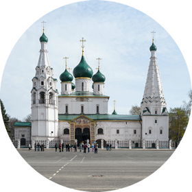
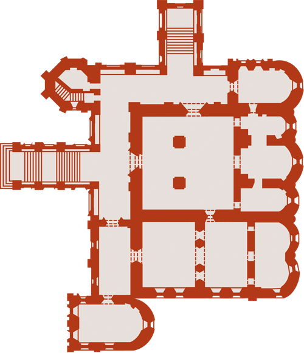

Церковь Ильи Пророка
|

фотографии
|

план храма
|
Выйдя из монастыря через северные ворота, обращённые к городу, поверните направо. В конце улицы вы увидите самый знаменитый среди памятников ярославской архитектуры собор XVII века — церковь Ильи Пророка с шатровой колокольней слева от парадного крыльца и ещё одним шатром изящных пропорций, венчающим придел Ризы Господней, справа от него. Церковь построена в 1647–1650 годах на месте двух прежде стоявших на этом месте деревянных храмов купцами Скрипиными — братьями Вонифатием и Иоанникием. Признанные не только в Ярославле, но и в столице (один из них — Иоанникий — получил статус «государева гостя»), Скрипины в своё время были самой состоятельной и благочестивой семьёй города (родные брат и сестра купцов приняли монашеский постриг). Эта семья, как и другие ярославские династии храмостроителей, скорее всего вела своё происхождение из Новгорода, от переселенцев. После присоединения вольного города к Москве в 1478 году, почти векового сопротивления Новгорода власти Москвы и опричного похода Ивана Грозного в 1569 году выжившие новгородцы были принудительно переселены в другие земли. Так случилось, что предприимчивые купцы, наказанные царём, оказались на новом волжском торговом пути, который им же был обеспечен взятием Казани и Астрахани. Таких купеческих родов в Ярославле оказалось несколько, причём все они в течение золотого для города XVII века поставили на посаде каменные церкви. Скрипины были не первыми купцами, построившими в Ярославле церковь, им уже было на что ориентироваться, поэтому церковь Ильи Пророка вышла и снаружи, и внутри очень гармоничной, продуманной. Уважение и покровительство патриарха московского и государя выразилось в том, что к окончанию строительства Скрипины получили невероятно щедрый подарок — вклад в новый храм — частица хранившейся в Москве Ризы Господней, для которой в юго-западном углу и был устроен специальный Ризоположенский придел с шатровым завершением. К южной стене основного храма прилегает зимняя церковь Покрова Богоматери с трапезной. Придел в честь святых исповедников покровителей домашнего очага Гурия, Самона и Авива (в северо-восточном углу) служил Скрипиным домовой церковью, а после смерти братьев и их родственников, когда род прервался, придел был превращён в ризницу, службы в нём более не проводились. Белокаменные гробницы семейного склепа сохранились в подклетах.
Поражает одновременно и деловая сметка, и глубокая, истинная вера этой семьи. При строительстве церковь была поставлена на высокий подклет, чтобы пространства под галереей можно было сдавать внаём под лавки и на эти деньги содержать причт. Перед смертью Вонифатий и Иоанникий успели достроить церковь и обеспечить её всем необходимым, в том числе своими домашними иконами. Новый иконостас частично «подгорел» при пожаре 1658 года и был переделан мастером из Сольвычегодска Фёдором Зубовым ещё при жизни строителей храма. А через двадцать лет после смерти братьев вдова Вонифатия Улита Макаровна заказала лучшим в то время иконописцам — костромичам Гурию Никитину и Силе Савину с помощниками — роспись храма. Эти фрески (1680) и есть главная жемчужина церкви, уникальный памятник, ради которого стоит совершить путешествие в Ярославль. Особенность росписи в том, что она содержит много сцен, никогда прежде не встречавшихся в православных храмах; источником вдохновения костромских мастеров скорее всего была знаменитая «Библия Пискатора» — иллюстрированное гравюрами западноевропейское издание, получившее большую популярность у русских изографов второй половины XVII века. Самая известная из фресок «Жатва» (на южной стене храма) демонстрирует в полной мере общий принцип этой росписи, развивающейся лентой ярусов, внутри которых нет деления на сюжетные сцены, и часто второстепенные бытовые детали оказываются написанными более живо и притягивают к себе больше внимания, чем те сцены, ради которых они написаны. Библейский сюжет, который в «Жатве» практически заслонён изображением полевых работ, — «Смерть сына сунамитянки во время жатвы». Придел Покрова, галереи церкви и разделяющие их металлические двери также имеют сюжетную и декоративную роспись, немного более позднюю, но очень выразительную.
Название